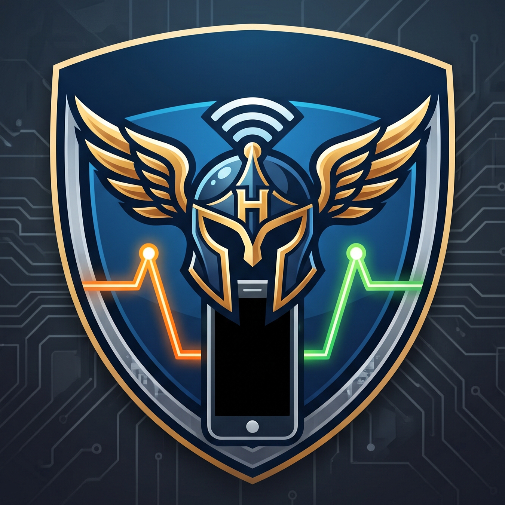

Product brief
Source of truth for product requirements, goals, and constraints.
INITIAL.md
Hermes Control Center Project documentation Markdown indexHermes Android Control Center
Product intent, system design, implementation plans, and practical setup notes for managing Hermes over Wireless ADB.
Orientation
Read the brief for the product shape, the architecture for its boundaries, then use the roadmap to find the active work.
No matching documents Try another title, topic, or category.
Purpose and decisions
What we are building and why
Source of truth for product requirements, goals, and constraints.
INITIAL.mdProblem exploration, key risks, and options considered.
BRAINSTORM.mdModule boundaries, core traits, IPC contracts, and data types.
ARCHITECTURE.mdRecorded decisions and the reasoning behind them.
DECISIONS.mdBuild and ship
Quality, security, releases
Release sequence, dependencies, and exit criteria.
MILESTONES.mdTest strategy, fixtures, CI checks, and manual QA.
TESTING.mdThreat model, security controls, and reporting guidance.
SECURITY.mdBuild, signing, notarization, versioning, and release steps.
RELEASE.mdSetup and research
Practical notes from the device boundary
ADB, Developer Options, wireless pairing, Termux, and Hermes.
guides/ANDROID_SETUP.mdCommon connection, Termux, and Hermes failures.
guides/TROUBLESHOOTING.mdFindings on the Android shell boundary and SSH transport.
spikes/termux-access.mdHermes session interfaces, data limits, and compatibility checks.
spikes/chat-sessions.mdWork breakdown
Plans link to acceptance criteria
Resolve major unknowns and establish the repository foundation.
tasks/M0-foundations.mdApplication shell, navigation, settings, and Rust skeleton.
tasks/M1-desktop-shell.mdDevice discovery, pairing, connection, and inspection.
tasks/M2-adb-core.mdFirst working terminal and streaming log viewer.
tasks/M3-basic-terminal-logs.mdSecure command execution as the Termux user.
tasks/M4-termux-bridge.mdConfigure and control Hermes with clear status and results.
tasks/M5-hermes.mdSessions, history, ANSI output, snippets, and scrollback.
tasks/M6-terminal.mdSearch, filtering, export, pause, and reconnect behavior.
tasks/M7-logs.mdOptional Termux-side service and structured transport.
tasks/M8-control-api.mdScope and exit criteria are maintained in the roadmap.
MILESTONES.mdSecurity, resilience, accessibility, and release readiness.
tasks/M10-production.mdRepeatable setup from a paired phone to running Hermes.
tasks/M11-provisioning.mdWindows and Linux support, packaging, and platform QA.
tasks/M12-cross-platform.mdBrowse transcripts and resume Hermes conversations.
tasks/M13-chat-sessions.mdHide, restore, and quit reliably across desktop platforms.
tasks/M14-tray-lifecycle.mdSingle-page searchable entry point for project docs.
tasks/M15-documentation-hub.md